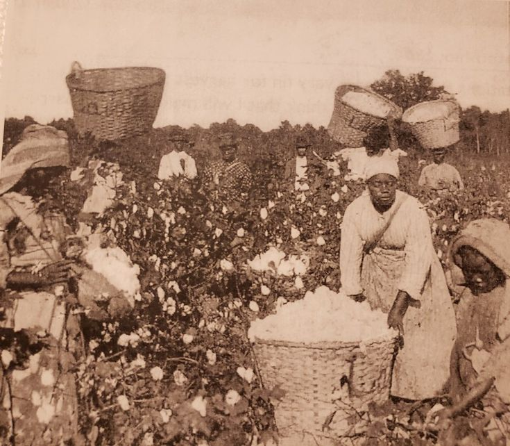

L’agriculture en Afrique est bien plus qu’un simple moyen de subsistance — elle constitue l’un des piliers fondamentaux de l’identité et de l’économie du continent. Depuis les premières civilisations agricoles du Nil et du Sahel, les communautés africaines ont su développer des systèmes agricoles adaptés aux climats variés et aux terres arides. Cependant, malgré sa richesse, l’agriculture africaine a longtemps été confrontée à des défis structurels : faible mécanisation, accès limité au financement, faible rendement et changement climatique. Aujourd'hui, grâce aux politiques de relance, à la mobilisation des jeunes et à l'introduction de technologies vertes, l'agriculture africaine entre dans une nouvelle ère de croissance durable.
cap-terre est née d'une vision simple mais puissante : moderniser l’agriculture africaine pour qu’elle soit un moteur de développement économique, de sécurité alimentaire et de fierté continentale. Nous réunissons des experts, des agriculteurs, des ingénieurs agronomes, des chercheurs et des institutions engagées pour bâtir ensemble une agriculture intelligente, résiliente et prospère. Nos programmes soutiennent les agriculteurs locaux par la formation, la mise en réseau, l’accès au matériel et la valorisation de leurs produits sur les marchés locaux et internationaux. Nous croyons que chaque ferme, même la plus petite, peut devenir un levier de changement positif pour son environnement et sa communauté.
Apprenez les techniques agricoles modernes, biologiques et durables avec nos formateurs qualifiés.
Nos ingénieurs agronomes vous accompagnent sur le terrain pour optimiser vos rendements et vos pratiques.
Accédez à des équipements performants : tracteurs, pulvérisateurs, systèmes d’irrigation solaire, etc.
Connectez-vous avec d’autres agriculteurs et acheteurs pour vendre, échanger ou coopérer.
Une question, une suggestion ou un projet ? Contactez notre équipe dès aujourd’hui. Nous sommes là pour accompagner tous ceux qui souhaitent faire partie du renouveau agricole africain. Que vous soyez un agriculteur débutant, une ONG, un investisseur ou un partenaire institutionnel, nous avons des solutions adaptées à vos besoins.